where healthcare meets wall street
End-to-end production for a video podcast on health tech and investing, presented by Silicon Valley Bank and hosted by Christina Farr and Stephanie Davis. Prepped guests and talking points, built each run-of-show, ran studio days in New York, and turned every episode into clips and social posts.
Guests included leaders from Midi Health, Rock Health Advisory, Aidoc, Oxeon, Grow Therapy and Talkspace.
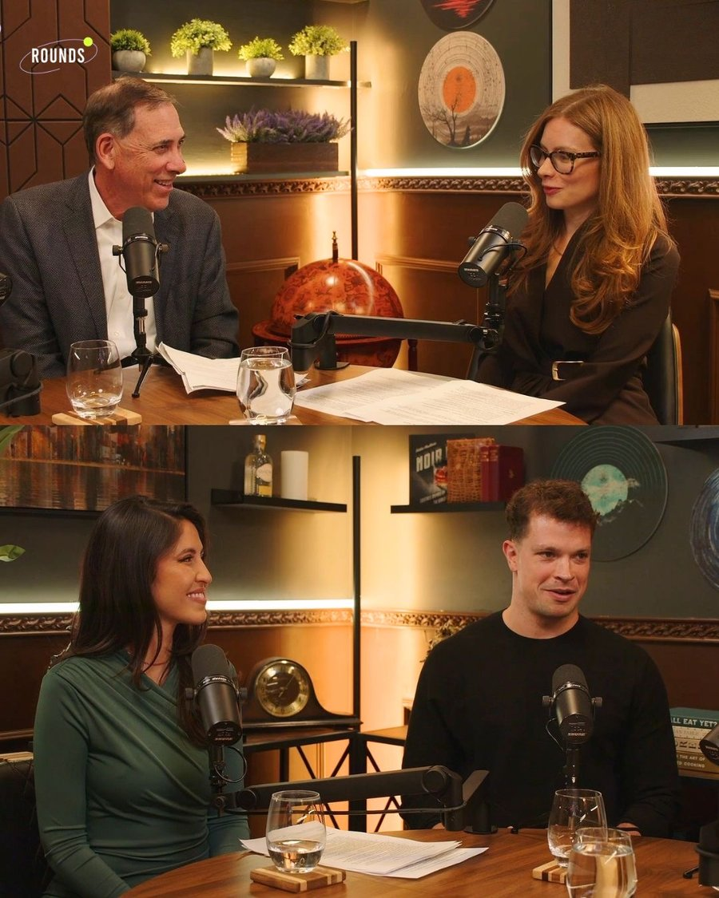
portfolio site for a tulsa artist
A home for Matt's paintings, mosaics, sculptures and prints. Every piece shows full size, with what's available listed first and sold work kept on view.
The site is built from custom HTML and hosted on GitHub Pages, with a simple dashboard built on Pages CMS so Matt can add new work himself.
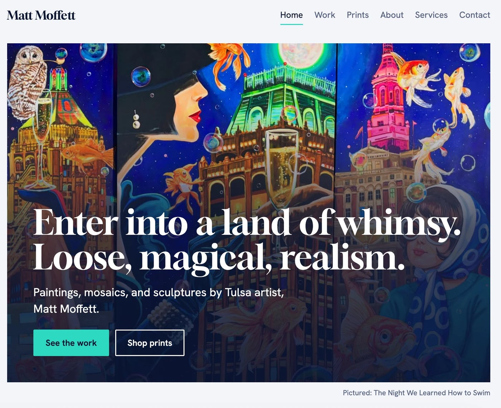
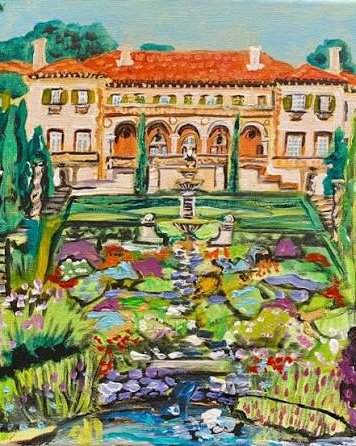
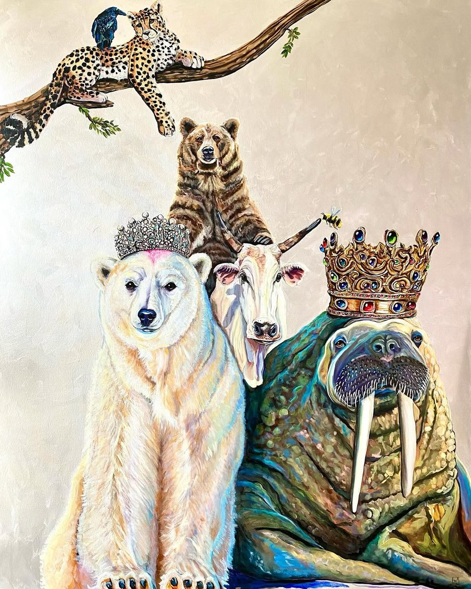
creative strategy & live social for the women's track meet
ATHLOS 2024: Led creative strategy and content development across social for ATHLOS NYC 2024, managed the content calendar, built relationships with athletes and partners, and coordinated pre- and post-production for content shoots.
Partnerships managed included Toyota, Spectrum, WYN Beauty and Megan Thee Stallion.
ATHLOS NYC 2024 was a Shorty Awards finalist in the Real-Time Response and Event & Experiential categories.
ATHLOS NYC 2025 and ATHLOS LDN 2026: On-site media manager directing live EVS clipping from the broadcast truck, calling key moments as they happened so the social team could edit while the meet was still running, and co-managed live posting to amplify athlete moments and fan engagement in real time.
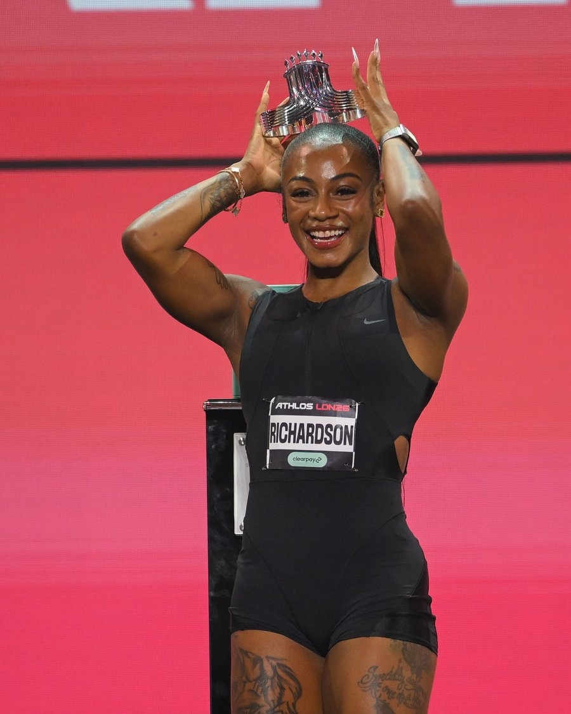
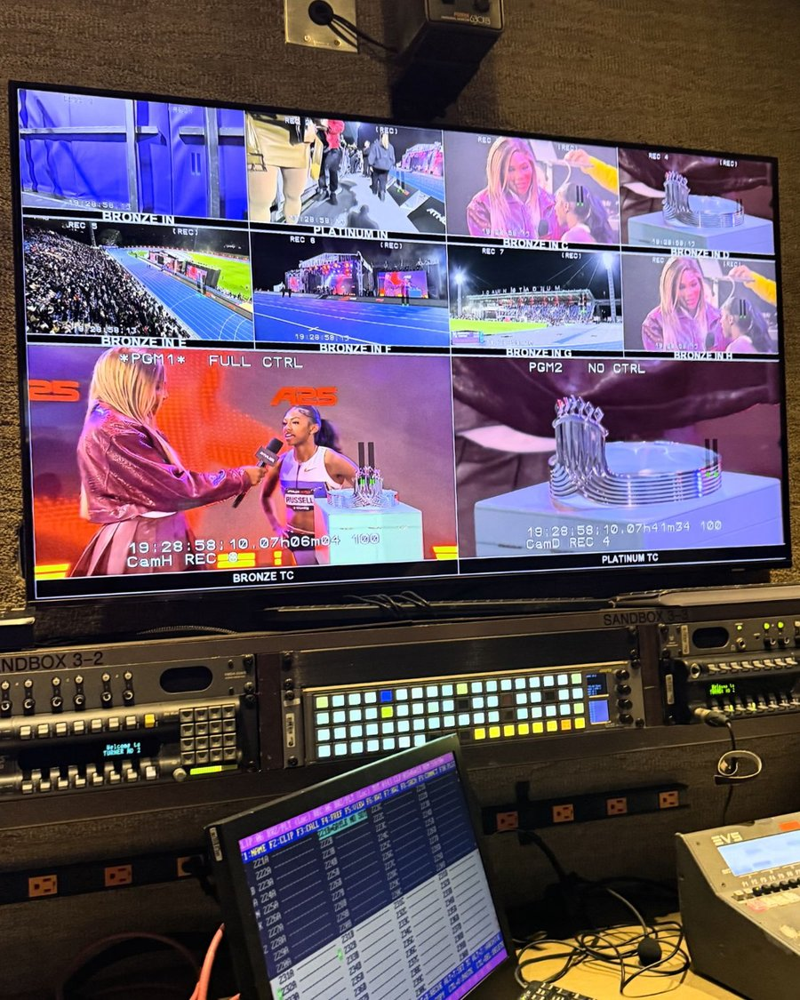
content strategy & social for the co-founder of reddit
Managed content strategy and social execution for Alexis Ohanian, co-founder of Reddit.
This included developing high-impact narratives, producing culturally relevant content, running the content calendar, and keeping the messaging aligned with his investments, values and public presence.
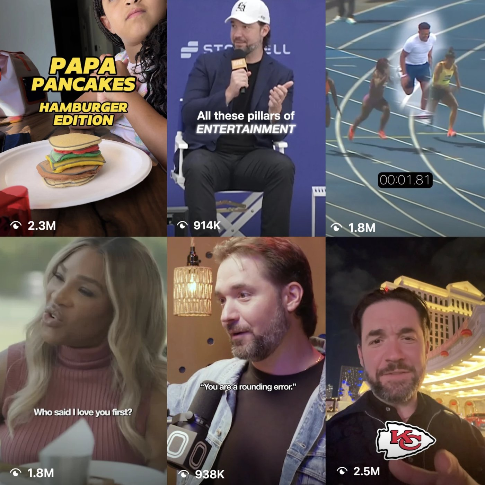
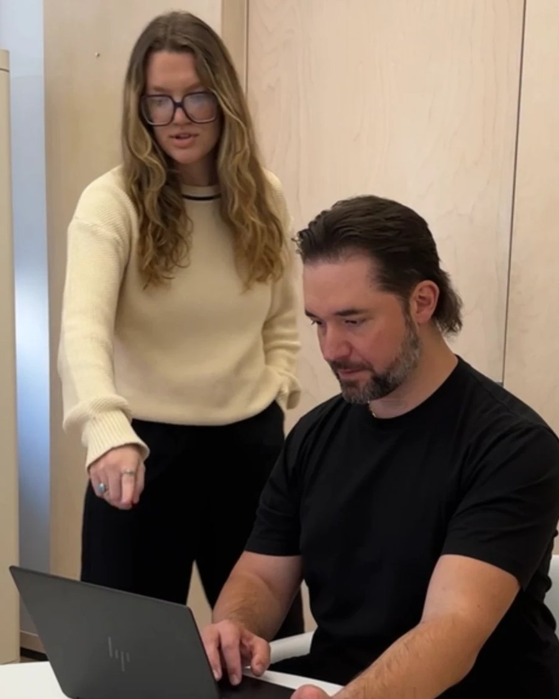
social, content & video for a masala dabba brand
Social management for Spice Wheel, a masala dabba brand, plus content and video produced end to end, from scripting through filming, editing and posting.
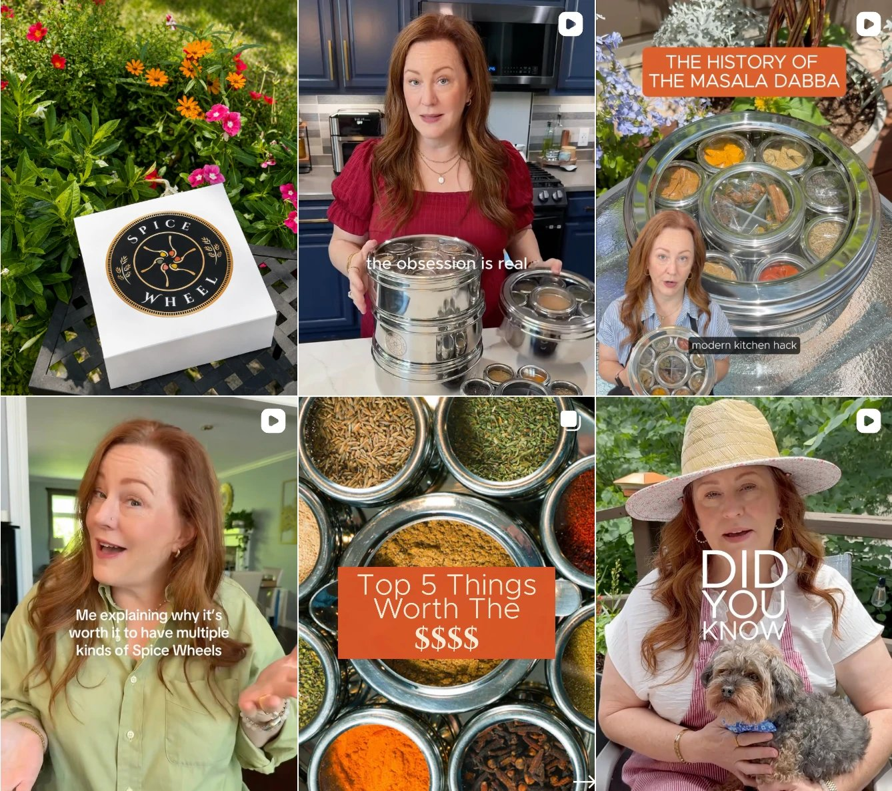
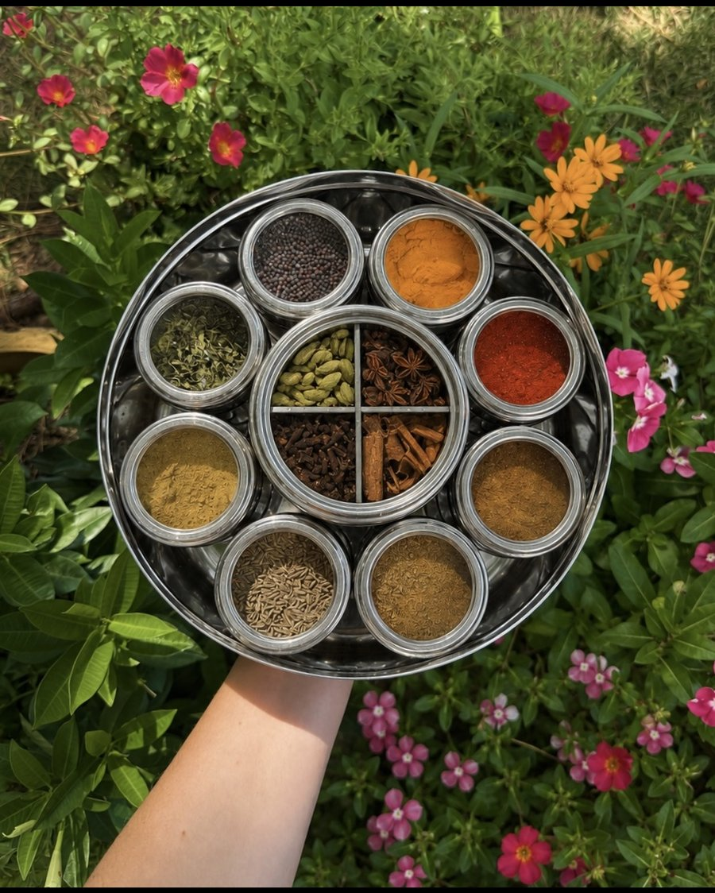
a coffee table book for tulsa collectors
Produced and edited a coffee table book for Tulsa art collectors Jack and Jan Alexander, documenting their personal collection of more than 2,000 works of art.
The book is both an archive and a love letter to a lifetime of collecting, capturing the depth behind one of Tulsa’s most remarkable private collections.
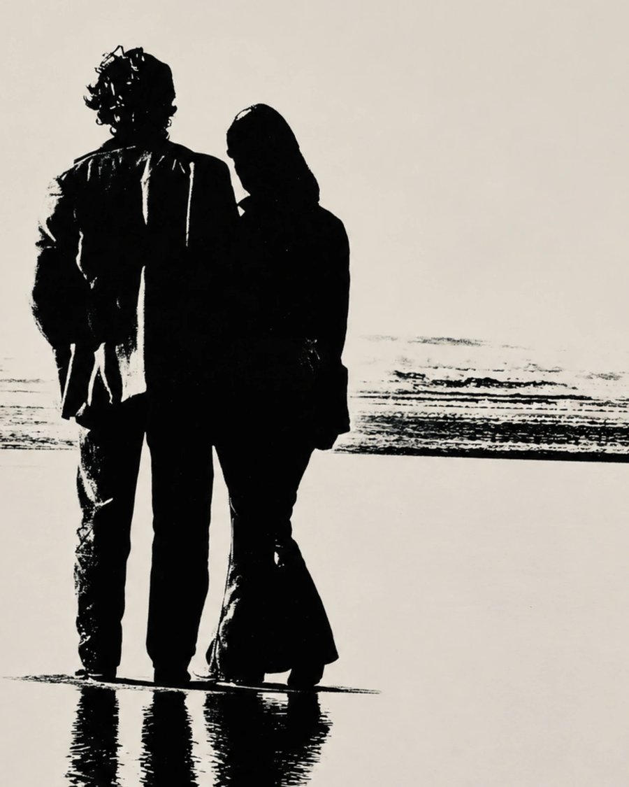
social content & influencers
Created a summer social content bundle for Desi Wok to grow awareness and sales through the season.
Alongside organic social, managed influencer content that put Desi Wok in front of thousands of new customers.
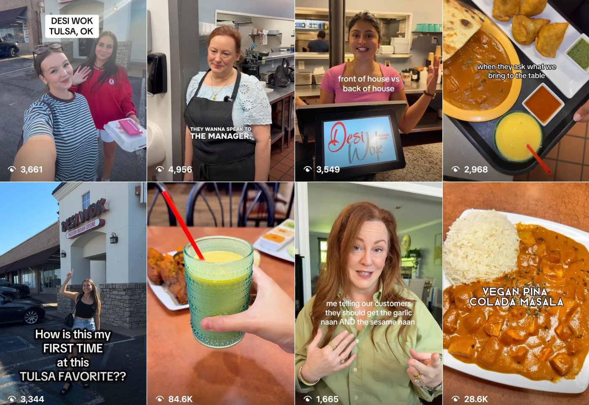